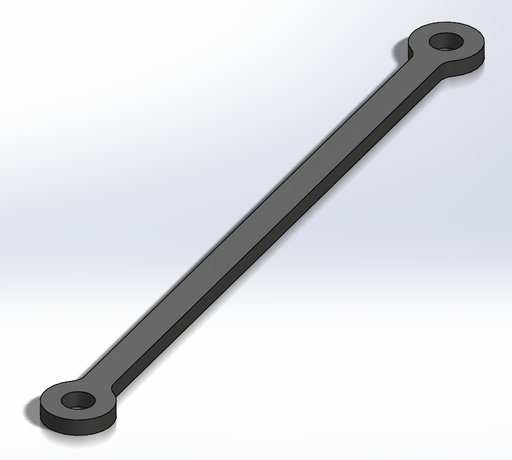
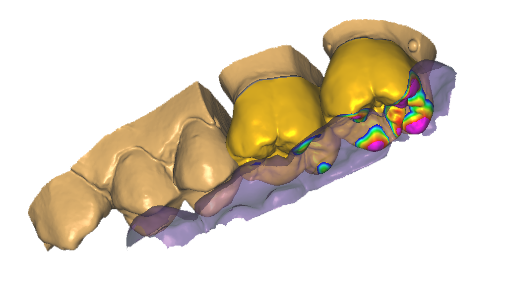
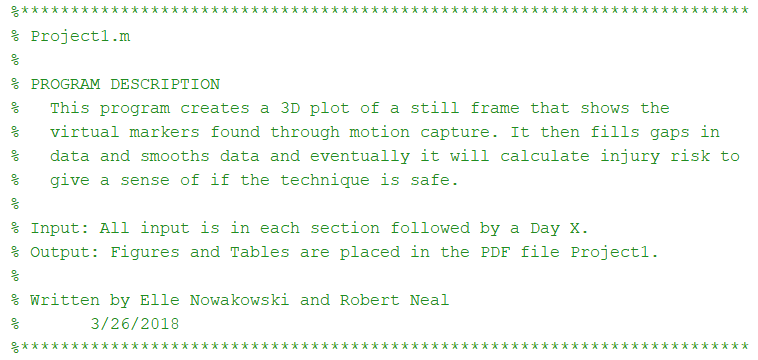
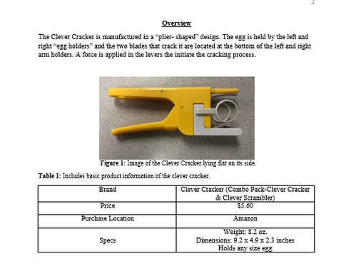
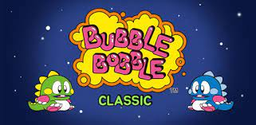

Portfolio
-
Helicopter Link
Freshman year, my team, which included two other members, designed and optimized a link connected to a helicopter blade rotating at 1300 rpm. Given three options for thickness, a provided plastic material, and seventy-eight different possible placements, the goal was to create the lightest link that could withstand a force of this magnitude among a class of fifteen other teams. Using my knowledge of statics and mechanics of materials, I personally calculated the force acting on the link given each placement using Excel. After finding the minimum force, I calculated the volume of each link using SolidWorks with the three thicknesses and the agreed upon factor of safety. As seen above, the final link implements a simple design, weighing in at less than two grams. Upon completion, not only did our link withstand the force of the blade, but it was the lightest of all teams. Much like work done in industry, the problem solving techniques I implemented during this project resulted in successful completion of the project with accurate and precise optimization. The final link demonstrates my knowledge of statics, SolidWorks and Excel, and my ability to solve complex problems in an organized and precise fashion, skills required to succeed in the field of Mechanical Engineering.
-
CAD Modeling
Throughout my college years I have created many designs in various CAD platforms including SolidWorks, Shapr, and multiple dental programs. Many of my SolidWorks projects were completed my freshman year in a graphical communications class, but most were out of interest. As seen to the right, I have created a sink and a trombone which illustrate my competency with 3D drawing, lofting, and revolving as well as more basic methods of extruding, shelling, and filleting. These skills are also displayed in my other SolidWorks projects portfolio where designs of vehicles, intricate artworks, and tools are present. Specifically, a project titled "If Tablet" illustrates my ability to use less common features of SolidWorks. As for dental CAD, I worked for an oral maxillofacial surgeon for approximately five years where I was tasked with creating, converting, and cleaning CT scans using software similar to Dentrix. My work on these cases aided in the success of over 500 surgeries throughout my time in the office. Due to HIPAA, I cannot showcase these works, but the image above provides similar characteristics such as the highly detailed denture creations with crowns, caps, and bite indention. My use of multiple CAD platforms details my competency in 3D modeling as well as my ability to adapt to changes, vital skills for Mechanical Engineers.
-
Nurse Movement Simulation
Freshman year of college, I took a computer programming class focused on MATLAB as the main language. Throughout the quarter, we completed three main projects. The first project specifically tested my ability to communicate with a partner through the use of coded comments. Myself and a partner were tasked with using pre-allocated data to simulate the movement of nurses when lifting and transporting patients. Without an ability to meet frequently, my partner and I were forced to rely on comments as seen above to communicate the purpose and thought behind our individual code. Even though neither of us were present for every coding session, we were able to review the other's comments and fully understand the importance behind each block of code. Because of our clear and concise commenting technique, we were able to finish the project well before the deadline and receive a perfect score. More than just proper coding technique, implementing comments into code allows for greater explanation in a less technical manner so that everyone can understand even the most complex material. Without implementing this skill, long and complicated code becomes confusing and incomprehensible and it becomes difficult to communicate and work efficiently with partners.
-
Egg Cracker Technical Report
Technical writing is a skill that many engineers lack but need in the workplace. My freshman year of college, I worked with a partner to enhance this skill by creating a technical report of an egg cracker in our design class. Given the product, we had to reverse engineer an egg cracker by determining materials used in production, creating the design specs, and examining many other features. Once we gathered all necessary information, I was tasked with outlining the product, providing stakeholder perspectives, and describing the geometry and performance of the product. The overview of the report as seen to the right provides a short description of the egg cracker along with an image and small table depicting the important consumer features of the product. I designed the section in this manner to allow for easy comprehension among all readers while still providing a brief technical description. I provided both basic sketches along with engineering drawings to showcase the importance of each part to everyone rather than fully relying on calculations and knowledge of engineering drawings. Then, when portraying the stakeholder perspectives, I provided a professional cannon table along with a visual representation of a house of quality, both outlined in a brief description using an easily understandable format. While maintaining a technical tone, I made the document legible for those outside of the field of engineering. This technical report outlines my ability to accurately depict a product in an efficient manner as required when developing projects in the field.
-
Bubble Bobble
During my second year of college, a partner and I used Java to recreate the video game, "Bubble Bobble". Using high cohesion and low coupling, two of the most important coding techniques, we created an efficient and highly functional design. Most notably, I was tasked with implementing inheritance among the classes as well as graphics, sprite behaviors, and key listeners. As you can see in the image above, the graphics highly resemble the original game and all of the sprites have intelligent behaviors. Also, the UML diagram showcases the code efficiency and inheritance that I implemented. My work on this project demonstrates my competency in the field of Computer Science, a skill many Mechanical Engineers lack. As a Mechanical Engineer, I believe that an understanding of code is essential to the work place, not only allowing for high speed calculations and assembly line optimization, but also for growth and efficiency in the work place.